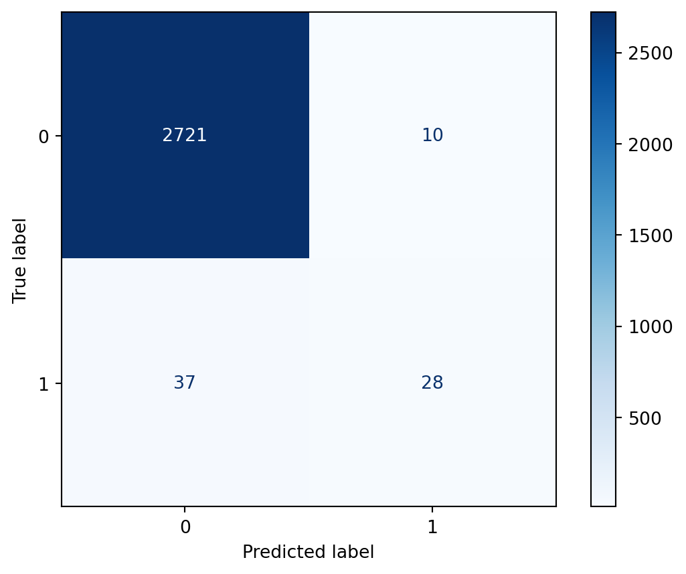
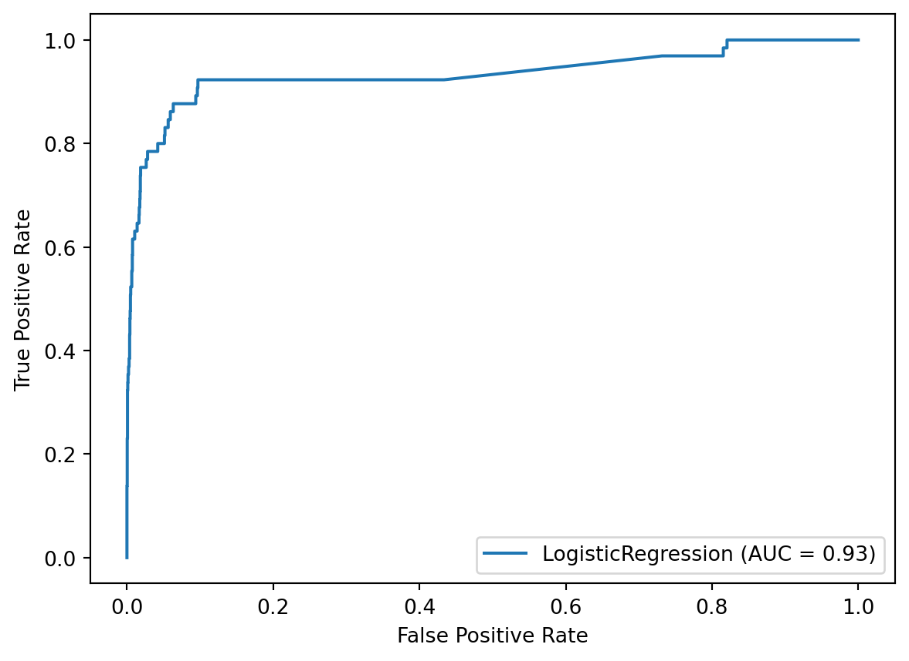
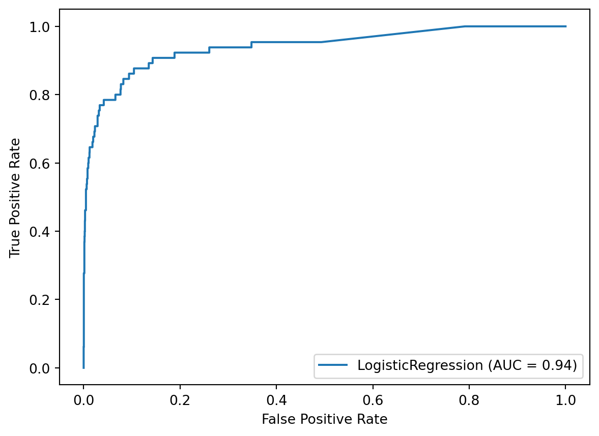

y.value_counts(normalize=True)0 0.616162
1 0.383838
Name: Survived, dtype: float64One of the common issues you might run into when working on a classification problem is known as “class imbalance”. This refers to a situation in which the classes are not equally represented in the dataset.
Class imbalance is inherent to many domains. For example, if we were classifying fraudulent transactions in a credit card dataset, there would naturally be class imbalance since the vast majority of transactions are not going to be fraudulent.
Class imbalance can occur in both binary classification problems, meaning there are 2 classes, and multiclass problems, meaning there are more than 2 classes. In binary classification, the class that has more samples is called the “majority class”, and the class that has fewer samples is called the “minority class”.
So why does class imbalance even matter? In brief, Machine Learning models often have a harder time predicting the minority class because there are fewer examples of this class to learn from. In other words, your model won’t be able to learn as much about the patterns in the minority class, and thus it may have a hard time differentiating between the classes.
Keep in mind that some class imbalance is present in most datasets. For example, in our Titanic dataset, the majority class represents 62% of the samples, and the minority class represents 38% of the samples. There’s even more imbalance in the census dataset, with a split of 76% to 24%.
A small amount of class imbalance (like in the Titanic dataset) tends not to matter, and you should just use all of the usual techniques that you’ve learned in this book. But as the amount of class imbalance increases, more specialized techniques need to be applied to the problem, and those techniques are the focus of this chapter.
y.value_counts(normalize=True)0 0.616162
1 0.383838
Name: Survived, dtype: float64census_y.value_counts(normalize=True) <=50K 0.760718
>50K 0.239282
Name: class, dtype: float64For this chapter, we’re going to use a dataset of mammography scans that were designed to detect the presence of cancer.
We’ll read in the dataset using pandas. You can see that there are 6 features as well as a target column called “class”. Each sample represents an object of interest that was extracted from a scan, and each object was translated into these features using a computer vision algorithm.
The class column has two possible values, -1 and 1. -1 means the object did not indicate the presence of cancer, and 1 means the object did indicate the presence of cancer. These labels were assigned by a human expert and thus represent the “ground truth” labels for the dataset.
scan = pd.read_csv('http://bit.ly/scanrecords')
scan.head()| attr1 | attr2 | attr3 | attr4 | attr5 | attr6 | class | |
|---|---|---|---|---|---|---|---|
| 0 | 0.230020 | 5.072578 | -0.276061 | 0.832444 | -0.377866 | 0.480322 | '-1' |
| 1 | 0.155491 | -0.169390 | 0.670652 | -0.859553 | -0.377866 | -0.945723 | '-1' |
| 2 | -0.784415 | -0.443654 | 5.674705 | -0.859553 | -0.377866 | -0.945723 | '-1' |
| 3 | 0.546088 | 0.131415 | -0.456387 | -0.859553 | -0.377866 | -0.945723 | '-1' |
| 4 | -0.102987 | -0.394994 | -0.140816 | 0.979703 | -0.377866 | 1.013566 | '-1' |
As you can see, -1 (meaning “non-cancerous”) is the majority class, and 1 (meaning “cancerous”) is the minority class. You might call this severe class imbalance because the minority class makes up only 2% of the dataset.
scan['class'].value_counts(normalize=True)'-1' 0.97675
'1' 0.02325
Name: class, dtype: float64Although scikit-learn doesn’t require it, we’re going to map the strings in the class column to the integers 0 and 1, in which 0 means “non-cancerous” and 1 means “cancerous”.
scan['class'] = scan['class'].map({"'-1'":0, "'1'":1})
scan.head()| attr1 | attr2 | attr3 | attr4 | attr5 | attr6 | class | |
|---|---|---|---|---|---|---|---|
| 0 | 0.230020 | 5.072578 | -0.276061 | 0.832444 | -0.377866 | 0.480322 | 0 |
| 1 | 0.155491 | -0.169390 | 0.670652 | -0.859553 | -0.377866 | -0.945723 | 0 |
| 2 | -0.784415 | -0.443654 | 5.674705 | -0.859553 | -0.377866 | -0.945723 | 0 |
| 3 | 0.546088 | 0.131415 | -0.456387 | -0.859553 | -0.377866 | -0.945723 | 0 |
| 4 | -0.102987 | -0.394994 | -0.140816 | 0.979703 | -0.377866 | 1.013566 | 0 |
Now that the dataset is ready, we’re going to define two objects, scan_X and scan_y, to represent the feature matrix and the target.
scan_X = scan.drop('class', axis='columns')
scan_y = scan['class']Throughout the book, we’ve been using cross-validation as the model evaluation procedure. But in this chapter, we’re going to use train/test split instead, since that will help you to better understand the metrics and techniques I’ll be outlining. However, I’ll return to cross-validation in chapter 19.
Before I get into the code, here’s a quick overview of how we use train/test split for model evaluation:
When we use K-fold cross-validation, we’re really just running train/test split K times in a very systematic way and then averaging the results. Cross-validation is superior because it outputs a lower variance estimate of model performance, but again, we’re going to start with train/test split to help you better understand the concepts in this chapter.
Anyway, let’s start by splitting the dataset into training and testing sets. We’ll use a split of 75% of the rows for training and 25% of the rows for testing, and we’ll set a random_state for reproducibility.
X_train, X_test, y_train, y_test = train_test_split(scan_X, scan_y,
test_size=0.25,
random_state=1,
stratify=scan_y)We’ll use stratified sampling so that the class proportions will be approximately equal in the training and testing sets. This is especially important when you have severe class imbalance, otherwise you might have insufficient examples of the minority class in either the training or testing set.
Now we’ll fit our logistic regression model on the training set, and use the fitted model to make predictions on the testing set. The predict method outputs class predictions of 0 or 1, which we’ll store as y_pred.
As an aside, we’re not using a Pipeline here because the features are entirely numeric and don’t need any preprocessing. However, if you were using a Pipeline, you would just use pipe.fit and pipe.predict instead.
logreg.fit(X_train, y_train)
y_pred = logreg.predict(X_test)
y_predarray([0, 0, 0, ..., 0, 0, 0])Finally, let’s evaluate the model’s predictions. We’ve used accuracy as our evaluation metric throughout the book, so we’ll try that here. We have to import the accuracy_score function from the metrics module, and then we pass it the true values followed by the predicted values.
It outputs an accuracy of 98%, which sounds great. But as you might recall, about 98% of the target values are 0, so an uninformed model could achieve 98% accuracy by always predicting class 0.
Because the accuracy value isn’t telling us much about how the model is actually performing, it’s not a particularly useful evaluation metric in cases of severe class imbalance.
from sklearn.metrics import accuracy_score
accuracy_score(y_test, y_pred)0.9831902718168812Before we choose an evaluation metric other than accuracy, let’s first use a confusion matrix to get a better understanding of our results.
We import it from the metrics module, and then pass it the true values followed by the predicted values. Note that the ordering is important, because your confusion matrix will be incorrect if you pass the predicted values first and the true values second.
from sklearn.metrics import confusion_matrix
confusion_matrix(y_test, y_pred)array([[2721, 10],
[ 37, 28]])It can be hard to remember what each of the four boxes represents, so a nice alternative is to use the plot_confusion_matrix function, which was introduced in version 0.22. After importing it, we pass it a fitted model, X_test, and y_test. It makes predictions for X_test, and outputs a confusion matrix by comparing the results to y_test. In other words, it duplicates some of the work we’ve already done, though it ends up with the same result.
As an aside, scikit-learn 1.0 actually provides a different method for plotting a confusion matrix that allows you to directly pass in y_pred.
Anyway, the confusion matrix is now labeled, with the true labels as the rows and the predicted labels as the columns. You can see that:
from sklearn.metrics import plot_confusion_matrix
disp = plot_confusion_matrix(logreg, X_test, y_test, cmap='Blues')
You can see that the confusion matrix helps us understand the performance of our classifier much better than the accuracy score.
In particular, it highlights a troubling issue, which we can see by examining the bottom row. There were 65 samples in which cancer was present in the testing set, and it was only detected in 28 of those cases. Given the context, in which the model is attempting to detect the presence of cancer, you could imagine that it would be highly problematic to miss 37 out of 65 cases. This is an issue that we will address by the end of this chapter.
Before we discuss a solution to the problem from the previous lesson, let’s first calculate a few rates from the confusion matrix to help us quantify what we want to improve and what tradeoffs we’ll be making. Here’s our confusion matrix from the previous lesson.
confusion_matrix(y_test, y_pred)array([[2721, 10],
[ 37, 28]])True Positive Rate answers the question: When cancer is present, how often is that correctly predicted? We divide the True Positives by the entire bottom row, and we get 43.1%. True Positive Rate is also known as recall.
28 / (37 + 28)0.4307692307692308True Negative Rate answers the question: When cancer is not present, how often is that correctly predicted? We divide the True Negatives by the entire top row, and we get 99.6%.
2721 / (2721 + 10)0.9963383376052728False Positive Rate answers the question: When cancer is not present, how often is that incorrectly predicted? We divide the False Positives by the entire top row, and we get 0.4%. As you might have figured out, the False Positive Rate is 1 minus the True Negative Rate.
10 / (2721 + 10)0.003661662394727206Another way to see these results without doing the calculations yourself is with the classification report. We import it and pass it the true and predicted values.
from sklearn.metrics import classification_report
print(classification_report(y_test, y_pred)) precision recall f1-score support
0 0.99 1.00 0.99 2731
1 0.74 0.43 0.54 65
accuracy 0.98 2796
macro avg 0.86 0.71 0.77 2796
weighted avg 0.98 0.98 0.98 2796
Because the True Positive Rate of 43% seems quite problematic, you might think that the solution is just to work on maximizing True Positive Rate. However, the danger of only focusing on True Positive Rate is that you might end up with a confusion matrix similar to this.
confusion_matrix(y_test, np.ones_like(y_pred))array([[ 0, 2731],
[ 0, 65]])The True Positive Rate in this case is 100%, but that’s because we’re always predicting the positive class. As such, the False Positive Rate would also be 100%. I think you would agree that this is not a useful solution.
Now that I’ve gone through the nature of the problem, let’s start talking about a solution.
The first part of the solution is to choose a different evaluation metric to focus on when tuning our model. We’re going to use AUC, which is short for Area Under the ROC Curve. At a high level, AUC is a measure of how well the model separates the classes by predicting higher probabilities for the class 1 samples than for the class 0 samples.
To explain this further, let’s have the fitted model output predicted probabilities (rather than class predictions) by using the predict_proba method. We’ll store these in y_score and print them out.
This first number tells us that for the first sample in the test set, the model predicts a 0.18% likelihood that it belongs to the positive class. The second number tells us that for the second sample in the test set, the model predicts a 0.26% likelihood that it belongs to the positive class. And so on.
y_score = logreg.predict_proba(X_test)[:, 1]
y_scorearray([0.00179856, 0.00255211, 0.00181612, ..., 0.0015053 , 0.02641707,
0.00073432])AUC is a measure of how good a job the model is doing at assigning higher probabilities to class 1 samples than class 0 samples. In other words, AUC doesn’t care about the actual predicted probability values, rather it cares only about the rank ordering of the values. As such, it can be used with any classifier that outputs predicted probabilities, regardless of whether those probabilities are well-calibrated.
Let’s actually calculate the AUC for our model. We import the roc_auc_score function, and then we pass it the true values followed by the predicted probabilities, not the class predictions. It outputs an AUC of 0.93, which is quite good.
from sklearn.metrics import roc_auc_score
roc_auc_score(y_test, y_score)0.9339323437455991To put this in context, a perfect model would achieve an AUC of 1.0, whereas a completely uninformed model would achieve an AUC of 0.5.
A more formal way to interpret this value is as follows: If you randomly chose a class 1 sample and you randomly chose a class 0 sample, there’s a 93% probability that the model assigned a higher predicted probability to the class 1 sample than the class 0 sample.
A natural follow-up question might be: Why is the AUC so high, when the True Positive Rate is so low?
To answer that question, we have to talk about the decision threshold. The decision threshold is the predicted probability value above which a model will predict the positive class. By default, the threshold is 0.5, which means that if a model predicts a probability of 0.7, it predicts class 1. Whereas if a model predicts a probability of 0.2, it predicts class 0.
From looking at the confusion matrix again, we can see that there were only 38 samples in the testing set for which the model predicted class 1.
confusion_matrix(y_test, y_pred)array([[2721, 10],
[ 37, 28]])Equivalently, there were only 38 samples for which the model predicted a probability greater than 0.5.
If you’re wondering how this code works, the part within the parentheses is creating a boolean array, and summing that array converts each True to one and each False to zero.
sum(y_score > 0.5)38With all of that in mind, we can infer two things from the fact that the AUC is high but the True Positive Rate is low:
To understand this second issue better, we’ll plot the ROC curve using the plot_roc_curve function, which was introduced in version 0.22. It uses an API similar to plot_confusion_matrix, in that we pass it the fitted model, X_test, and y_test, though the API has changed starting in scikit-learn 1.0.
So what are we looking at? The ROC curve is a plot of the True Positive Rate (on the y-axis) versus the False Positive Rate (on the x-axis) for all possible decision thresholds.
So for example, with the default decision threshold of 0.5, our True Positive Rate was 43%, and our False Positive Rate was nearly 0, which is represented by a single point on the curve.
We could move to another point on the curve simply by changing the decision threshold. For example, we could move to a point that has a True Positive Rate of about 90% and a False Positive Rate of about 10% by changing the threshold. To be clear, the threshold itself is not shown on this plot, rather the plot only shows the True Positive Rate and False Positive Rate pairs that result from all possible thresholds.
One other thing I want to note about this plot is that the Area Under the Curve is literally the percentage of the plot that is underneath the curve. So because the AUC is 0.93, we know that 93% of this plot is underneath this curve. If we can increase the AUC, that means we are moving the curve further into the upper left corner, which means that higher True Positive Rates and lower False Positive Rates will be available to us.
from sklearn.metrics import plot_roc_curve
disp = plot_roc_curve(logreg, X_test, y_test)
Given what we’ve learned so far, I want to chart our path forward. In lesson 18.7, we’re going to try to improve the AUC of our model. Then in lesson 18.8, we’re going to explore alternative decision thresholds in order to balance the True Positive Rate and the False Positive Rate to our liking.
Now that we know that our next step is to improve our model’s AUC, how do we actually do that? The good news is that we can use any technique I’ve covered in this book, such as hyperparameter tuning, feature selection, trying non-linear models, and so on. All of those techniques have the potential to improve the model’s AUC.
However in this lesson, I want to focus on one particular technique that we haven’t covered in this book that is particularly useful in cases of class imbalance. That technique is called cost-sensitive learning.
The insight behind cost-sensitive learning is that not all prediction errors have the same cost. This can refer to an actual dollar cost of one type of error versus another, or in our case, the real-world implications of a certain type of error.
When there’s severe class imbalance, it’s usually the case that False Negatives, in which positive samples are identified as negative, have a higher cost than False Positives, in which negative samples are identified as positive. This makes sense because the positive samples are rare occurrences, and thus we’re more interested in locating the positive samples than the negative samples. In simple terms, we would prefer a False Positive to a False Negative.
So how does cost-sensitive learning actually work? In scikit-learn, this is implemented using the class_weight parameter for some models, such as logistic regression and Random Forests.
By setting class_weight to 'balanced', scikit-learn will give more weight to the samples from the minority class than samples from the majority class. More specifically, the model is penalized more for making mistakes on the minority class (meaning False Negatives) than it is for making mistakes on the majority class (meaning False Positives). Because the model’s goal is to minimize the total cost, the model may show increased bias toward predicting the minority class.
Let’s try this out by creating a logistic regression instance that uses class_weight='balanced'. This specifies a class weighting that is inversely proportional to the class frequencies in the input data, though you can specify custom weights for each class if you like.
logreg_cost = LogisticRegression(solver='liblinear',
class_weight='balanced', random_state=1)We’ll fit our logistic regression model on the training set, and use the fitted model to make class predictions as well as predicted probabilities on the testing set. Then we’ll calculate the AUC, and it has increased from 0.93 to 0.94 simply by setting class weights.
Keep in mind that class weighting is not guaranteed to improve your AUC, and thus it should be tuned like any other parameter, as we’ll see in the next chapter.
logreg_cost.fit(X_train, y_train)
y_pred = logreg_cost.predict(X_test)
y_score = logreg_cost.predict_proba(X_test)[:, 1]
roc_auc_score(y_test, y_score)0.9404163028476467Let’s take a look at the classification report to see how our rates have changed:
I do want to point out that even though this model might match our priorities better, its accuracy is down from 98% to 89%. This illustrates how sometimes a useful classifier has a lower accuracy than null accuracy.
print(classification_report(y_test, y_pred)) precision recall f1-score support
0 1.00 0.89 0.94 2731
1 0.16 0.88 0.27 65
accuracy 0.89 2796
macro avg 0.58 0.88 0.61 2796
weighted avg 0.98 0.89 0.93 2796
At this point, we could continue to tune various aspects of our model to increase the AUC, but instead we’re just going to move on to tuning the decision threshold.
Let’s take a look at the ROC curve for our class-weighted logistic regression model. Using the default threshold of 0.5, the model achieved a True Positive Rate of 88% and a False Positive Rate of 11%, which is represented by a single point on the curve. If we want to move somewhere else on this curve, in order to better match our priorities, we simply change the threshold.
disp = plot_roc_curve(logreg_cost, X_test, y_test)
Before tuning the threshold, it’s useful to examine the confusion matrix. This is our current confusion matrix, which results from the default threshold of 0.5. You might notice that there are a lot more True Positives and False Positives than before.
confusion_matrix(y_test, y_pred)array([[2436, 295],
[ 8, 57]])More specifically, the model is predicting the positive class 352 times, whereas previously it predicted the positive class only 38 times.
sum(y_score > 0.5)352Let’s pretend that we’re still uncomfortable with having 8 False Negatives, and thus we want to reduce those even further. By decreasing the threshold to 0.25, we find out that the model will predict the positive class 870 times.
sum(y_score > 0.25)870The boolean array created by this condition can be converted to class predictions simply by multiplying it by 1.
(y_score > 0.25) * 1array([0, 0, 0, ..., 0, 1, 0])And in fact, the boolean array can be passed directly to the confusion matrix function, and it will do the conversion automatically.
Thus we can see that by decreasing the threshold to 0.25, the number of False Negatives has been reduced from 8 to 4, but the number of False Positives has increased from 295 to 809. More generally, decreasing the threshold moves samples from the left column of the confusion matrix to the right column.
confusion_matrix(y_test, y_score > 0.25)array([[1922, 809],
[ 4, 61]])Looking at the classification report, the True Positive Rate has increased to 94%, but the False Positive Rate has increased to 30%. That moves us to a new spot on the ROC curve.
print(classification_report(y_test, y_score > 0.25)) precision recall f1-score support
0 1.00 0.70 0.83 2731
1 0.07 0.94 0.13 65
accuracy 0.71 2796
macro avg 0.53 0.82 0.48 2796
weighted avg 0.98 0.71 0.81 2796
Alternatively, let’s pretend that we actually think the original threshold resulted in too many False Positives. In that case, we could increase the threshold to 0.75, which moves samples from the right column to the left column.
confusion_matrix(y_test, y_score > 0.75)array([[2632, 99],
[ 15, 50]])We can see from the classification report that the True Positive Rate has decreased to 77%, but the False Positive Rate has decreased to 4%. Again, that moves us to a new spot on the ROC curve.
print(classification_report(y_test, y_score > 0.75)) precision recall f1-score support
0 0.99 0.96 0.98 2731
1 0.34 0.77 0.47 65
accuracy 0.96 2796
macro avg 0.66 0.87 0.72 2796
weighted avg 0.98 0.96 0.97 2796
Keep in mind that as we change the threshold, it’s not actually changing the model itself. Instead, changing the threshold is just a way to make tradeoffs between two different types of errors, namely False Positives and False Negatives.
And to be clear, there is no correct threshold that we are trying to find. Instead, the threshold you should choose is the one that best matches your priorities. A method does exist for finding the point on the ROC curve that is closest to the upper left corner and calling that the correct threshold, but again, that threshold is only useful if it matches your priorities.